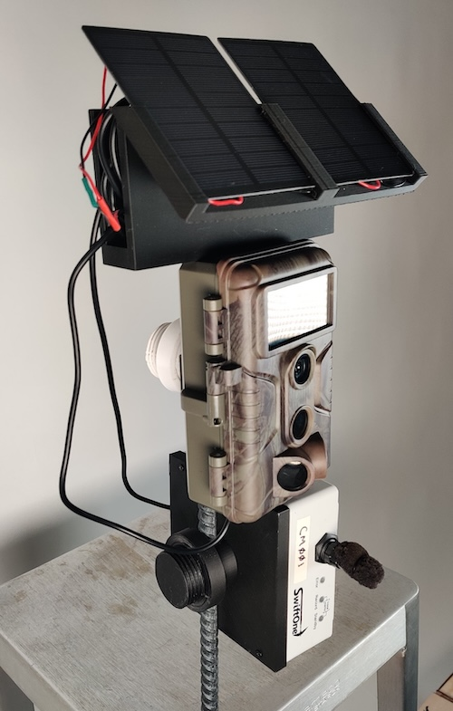
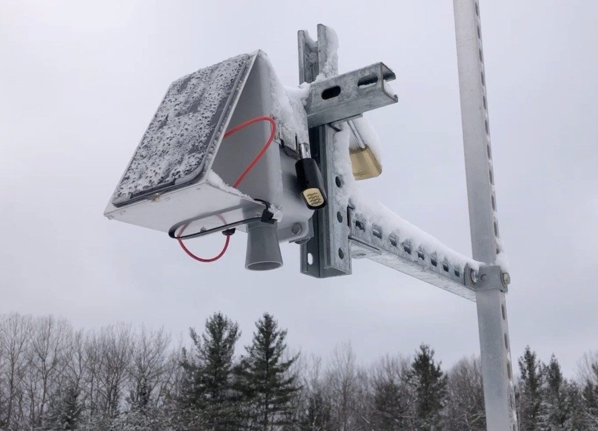

<br>
## Final Project Ideas
The assignment for this week is to brainstorm final project ideas. I have come up with the following three ideas as potential final projects for the course. They are all related to low-cost environmental sensing hardware, which is tied to my PhD research. Perhaps this is the "easy" route, but I think it will be fun to 1) learn more about making the hardware rather than just use the data and 2) to explore sensing systems for environments and applications beyond what I've focused on, which is urban air quality monitoring. So to this end, I've come up with the following ideas:
<br>
#### Beaver Camera Traps
One idea in this space is related to Nathan's work with Indigenous groups in Montana. Nathan suggested that there is a need for a camera trap to track beavers, which is difficult because beavers can glide by quietly in the water, making them difficult to detect. For this project, I anticipate that the hardware will be rather straightforward to put together - I'd want a camera and maybe microphone with a microcontroller and enclosure for weatherproofing. I imagine a solar panel would be helpful for power as well. I think the difficult part will be figuring out how to actually detect beavers. I could use TinyML (essentially putting machine learning models on microcontrollers) and train a model to detect beavers, maybe with YouTube videos or images from online. I could also try testing the device at the aquarium if they have beavers or with a prop beaver and some body of water, like a bathtub.
<img src="beaver.jpg" alt="beaver swimming through water" width="500" height="303">
<br>
#### More Robust Data Logger
Another idea Nathan suggested is a more robust solar-powered data logger for environmental sensing. This project would build on work of former students at MIT, <a href="https://abbydulski.github.io/22.03-Work/">found here</a>. To build on this work, I could make the solar panel automatically rotate based on the position of the sun throughout the year. I could also perhaps add some logic to include intermittent computing or other battery saving techniques. Furthermore, I could improve the design to make the system more durable for ourdoor settings and extreme weather.

<br>
#### Winterized Envrionmental Sensor
A third idea is to get a headstart on what I anticipate working on in my postdoc. This project would focus on designing sensing hardware to last through winters in the Great Lakes region near the Canadian border. This project has several different components to focus on for winterization. The enclosure needs to be able to withstand cold temperatures and potentially lots of snow and ice. It also needs to keep the internal temperature warm enough for electronics to keep running. There are possible electronic decisions that are better than others for cold weather as well. Plus, with limited sunlight in winter hours, energy harvesting from solar panels needs to be considered.

<br>
<br>
These are other ideas I had that I will not pursue this semester, but will leave here in case it inspires others.
<br>
#### Cool Wearable Device
After seeing that we could make flexible circuits -- and also because wearables are super cool -- I am interested in making a wearable device. However, I'm not sure what it would be monitoring or outputting.
<br>
#### Knitting Machine
I love knitting and fiber arts in general but have recently had trouble enjoying this hobby due to inflammation from the development of a chronic autoimmune disease. Existing knitting machines optimize for quick knitting and small radii projects, such as socks. I would love to instead make a machine that works more slowly, but can do different types of stitches and work on larger radii projects.
<br>
#### More Robust Smart Pill Machine
Building on prior student Linden Schrage's project, I could make a smart pillbox that works for 7 days of pills and also determines if pills were taken by maybe checking the weight of each pill container to see if there are pills present.